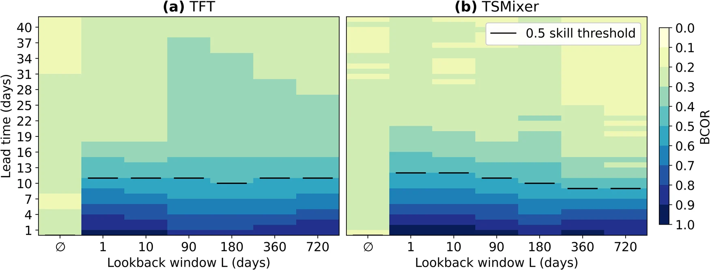
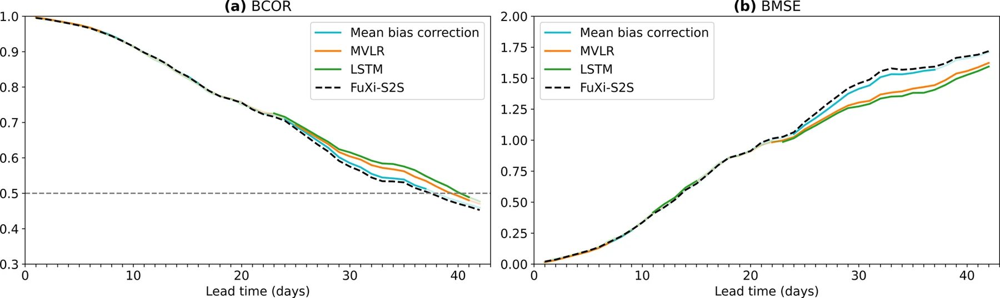
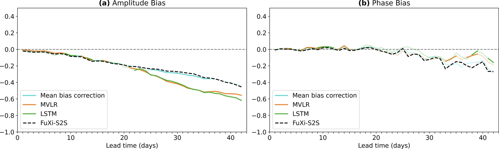
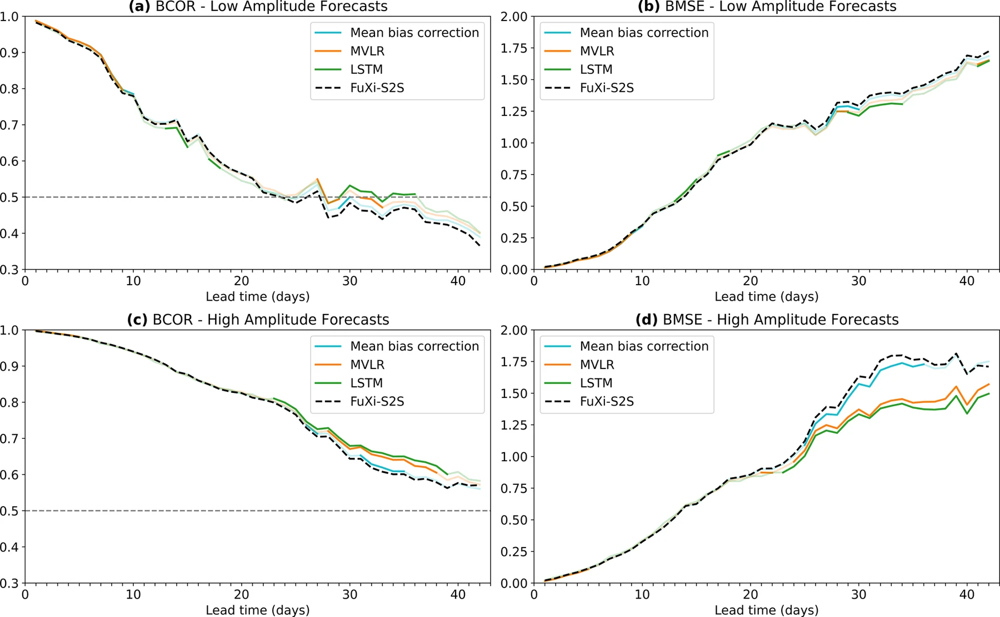
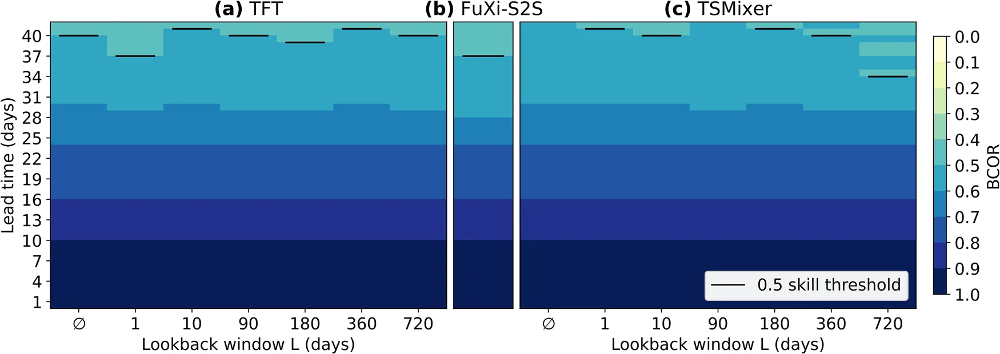
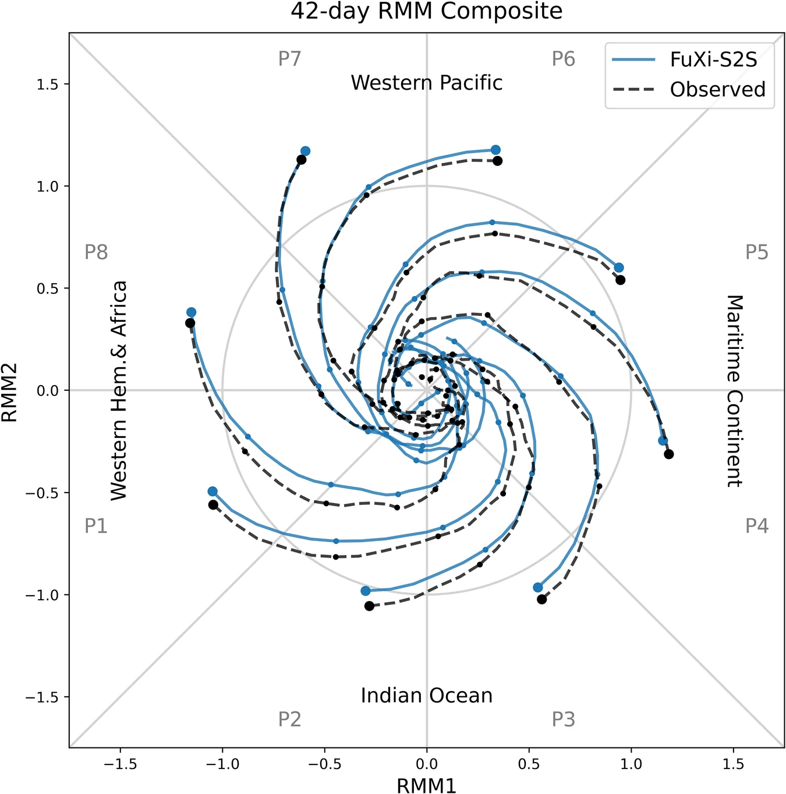
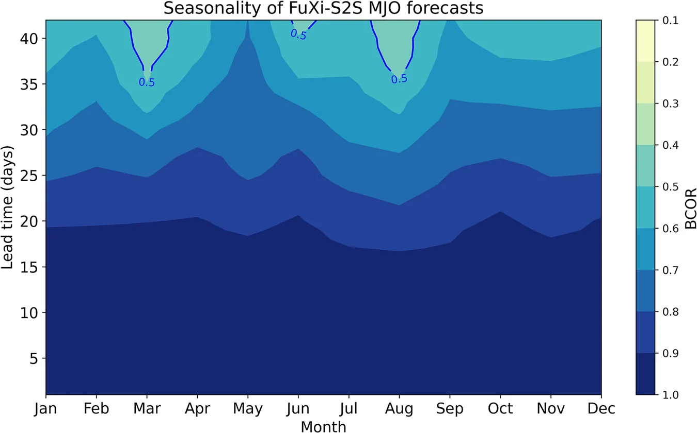

Study 2 of 4 · Predict
On the importance of historical context and bias correction in deep learning MJO prediction models
npj Climate and Atmospheric Science 9, 193 (2026) · Open access · doi.org/10.1038/s41612-026-01459-9
The Madden–Julian Oscillation (MJO) is a primary source of weather predictability 2 to 6 weeks ahead, and it shapes atmospheric rivers and Sierra Nevada snowpack. We paired FuXi-S2S, an AI foundation model for global subseasonal forecasting, with state-of-the-art time-series and bias-correction models adapted for MJO prediction. Our corrected forecasts extend the state-of-the-art skillful window from 37 to 40 days, and our experiments answer two open questions: whether modeling extended MJO history improves predictions, and whether existing bias-correction methods work for AI models the same way they do for physics-based models.1
37 → 40 days
of skillful MJO horizon (bivariate correlation > 0.5) after bias-correcting FuXi-S2S forecasts. Operational systems such as ECMWF reach around 30 days.
11%
reduction in forecast error (bivariate MSE) in weeks 5 and 6 (lead times of 29–42 days) after bias correction. When FuXi-S2S forecasts a strong MJO, the reduction is 19%.
9–12 days
of skill using only historical RMM indices to predict future MJO activity. Predictions do not improve whether the model sees 1 day or 720 days of past behavior. The current state carries the predictive information.
Weeks 3+
is when bias correction starts to correct systematic errors in FuXi-S2S. In a previous study of physics-based models, it helped from day 1.1
Why it matters
For California water management
- Lead time
Three more skillful days of MJO prediction, and smaller errors in weeks 3–6
Bias correction extends the skillful window from 37 to 40 days and reduces forecast errors in weeks 3–6, the range that matters for reservoir operations, drought preparedness and water allocation planning.
- Trust
Know when to rely on a forecast
When FuXi-S2S forecasts a strong MJO (amplitude ≥ 1 at a given lead time), skill holds through the full 42-day horizon. When it forecasts a weak MJO, skill lasts about 24 days, so predictions in weeks 4–6 should be interpreted with caution. Forecasts initialized in May and September–February stay skillful past 40 days, whereas forecasts initialized in March and June–August have shorter skillful windows (as low as 35 days).
Why it matters
For model developers and funders
- Inputs
Invest in the current atmospheric state, not in modeling longer history
Extended lookback windows of MJO activity do not improve skill. A richer representation of the current atmospheric state, with higher spatial resolution and more variables, is a more promising direction. It also keeps operational systems tractable.
- Evaluation
Separate systematic model errors from dataset mismatches
Evaluating against MJO indices from the Bureau of Meteorology, instead of indices built from the same data sources used to initialize FuXi-S2S, makes bias correction look much stronger: our correction model reduces BMSE by 38% in weeks 1–2. This improvement largely comes from correcting a distribution shift between the data used to initialize forecasts and the data used for evaluation, rather than a systematic model error. Part of the large gains reported for physics-based models likely comes from correcting such mismatches.
- Next
Further correcting amplitude and propagation errors requires new approaches
FuXi-S2S underestimates MJO amplitude at all lead times and propagates it too fast after week 3. Beyond week 3, bias correction reduces the phase bias (not always significantly) but weakens the amplitude further, trading one error for the other. Fixing both may require alternative training objectives, large ensembles, and better representation of moisture and the Maritime Continent.
Figures
Key results

Figure 1" loading="lazy">
Figure 2" loading="lazy">
Figure 3" loading="lazy">
Figure 4" loading="lazy">
Figure 6" loading="lazy">
Figure 7" loading="lazy">
Figure 8" loading="lazy">What we did
Data and methods
The MJO is tracked using the Real-time Multivariate MJO (RMM) indices, computed from NOAA outgoing longwave radiation (OLR) and ERA5 winds at 850 and 250 hPa over a 1979–2001 reference period (250 hPa replaces the typical 200 hPa, which the FuXi-S2S archive does not include). Our indices correlate at 0.91 with RMM indices from the Bureau of Meteorology.
FuXi-S2S, trained on 67 years of ERA5 (1950–2016), forecasts 51-member ensembles out to 42 days. Its public archive has twice-weekly starts (every 3–4 days) from 2002 to 2021. All models were trained on 2002–2017, validated on 2018 and tested on 2019–2021.
For our experiments modeling historical MJO activity, we trained a Temporal Fusion Transformer (TFT) and an MLP-based TSMixer with lookback windows of historical RMM indices ranging from none to 720 days. Neither architecture showed a clear advantage over the other, and neither model clearly improved with longer history. For bias correction, we trained mean-bias, multivariate linear regression (MVLR) and LSTM correction models separately for each lead time and MJO phase group. Our corrections showed no systematic dependence on phase or season.
Limits
Read with care
- FuXi-S2S was trained on 1950–2016, so skill measured over that period, such as the seasonality analysis, may be higher than for years outside the training set.
- Results are shown for FuXi-S2S, tested on 2019–2021. Other models with different architectures or training objectives, such as diffusion-based models, may show different MJO biases.
- History may still carry information in fields that the RMM, ROMI and VPM indices do not capture, such as the stratospheric QBO or moisture. Modeling richer historical contexts could see history play a larger role in predictive performance.
Data and code
Code and the FuXi-S2S RMM forecast indices: github.com/khalilv/mjo-predict. Raw FuXi-S2S forecasts: Hugging Face. ERA5 data: WeatherBench 2. OLR, ROMI and VPM indices: NOAA PSL. BoM RMM indices: Bureau of Meteorology.
Cite
Virji, K., A, G. & Velicogna, I. (2026). On the importance of historical context and bias correction in deep learning MJO prediction models. npj Climate and Atmospheric Science, 9, 193. https://doi.org/10.1038/s41612-026-01459-9